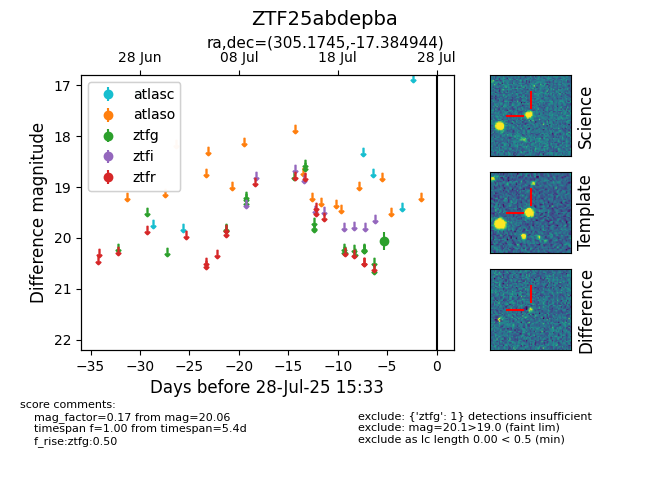

Target ZTF25abdepba at 2025-07-28 15:33, see:
FINK: fink-portal.org/ZTF25abdepba
Lasair: lasair-ztf.lsst.ac.uk/objects/ZTF25abdepba
ALeRCE: alerce.online/object/ZTF25abdepba
alt names
ZTF25abdepba (ztf,fink)
coordinates:
equatorial (ra, dec) = (305.1745,-17.38494)
galactic (l, b) = (26.4253,-27.30543)
photometry
last atlasc=17.18, atlaso=nan, ztfg=20.06
1 atlasc, 1 atlaso, 1 ztfg detections
